Introduction
The maps are the terrains in which the match is played, in Valorant each map has its own aesthetics and its peculiarities that make it unique, the map in which it will be played is randomly selected before each game.
When the game came out in its beta phase there were only three maps: Bind, Heaven and Split, currently a total of six more maps have come out over time.
Ascent
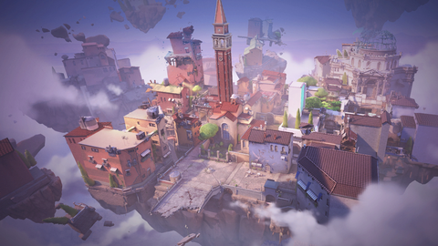
Location: Italy. Venice.
Ascent is a map that is characterized by having 2 doors that can be opened and closed with a lever and a large square in the center.
 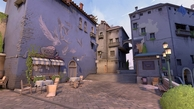
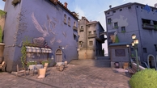
Bind
 Location: Morocco. Rabat.
Location: Morocco. Rabat.
The peculiarity of the Bind map are its 2 one-way teleporters which speed up the change of position.


Breeze
 Location: Island of the Atlantic Ocean.
Location: Island of the Atlantic Ocean.
Breeze is characterized by being the largest and most open map of all, it is an entire island with a large center and large plant areas


Fracture
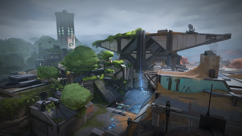
Location: United States. New Mexico.
Fracture is characterized by its various ways to enter each of the plant zones and because it is divided into 2 zones, forest and desert due to a failed experiment.
 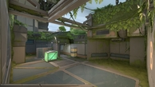
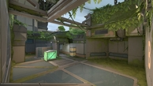
Haven
 Location: Bhutan. Thimbu.
Location: Bhutan. Thimbu.
The main feature of Haven is that it is a map with 3 possible plant points, unlike the rest of the maps where there are only 2


Icebox
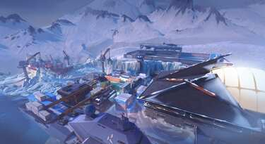
Location: Russia. Bennett's Island.
The peculiarity of Icebox is its verticality, it has many areas with a large difference in height, compared to the other maps that have very few.
 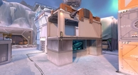
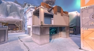
Lotus
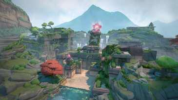
Location: India. Sahyadri Mountains.
Lotus is another map characterized by having 3 plant areas, however, Lotus also has 2 doors that rotate when you press a button, giving more access options to those planting areas.
 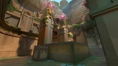
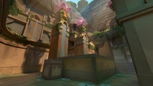
Pearl
 Location: Portugal. Lisbon.
Location: Portugal. Lisbon.
Pearl does not have a very clear peculiarity, but we could say that its central part is very labyrinthine, with many corners and closed angles.
Split
 Location: Japan. Tokyo.
Location: Japan. Tokyo.
In Split, the planting areas are uneven with the central area of the map, which is higher and provides a height advantage to those who position themselves in it.